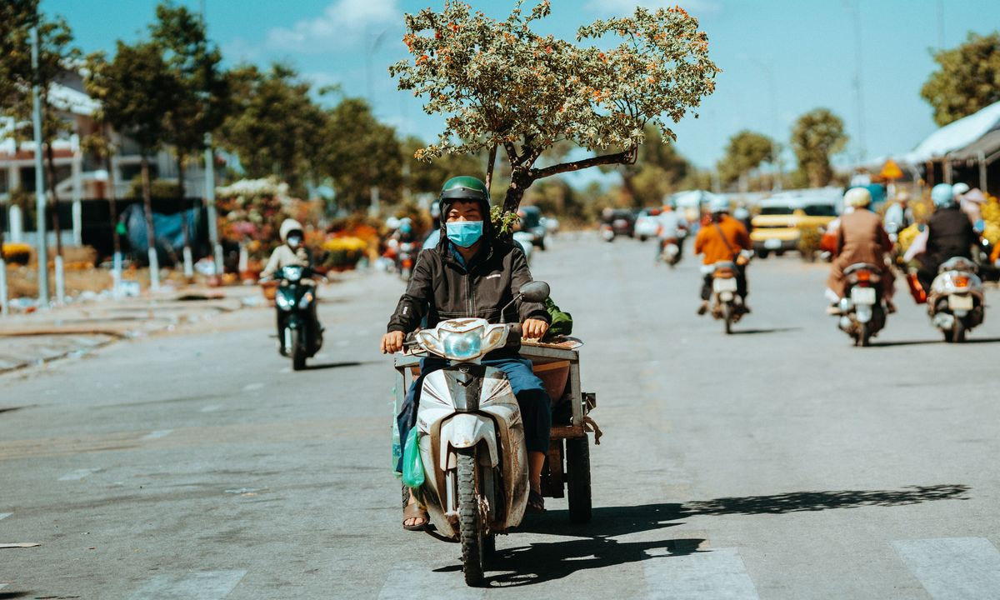
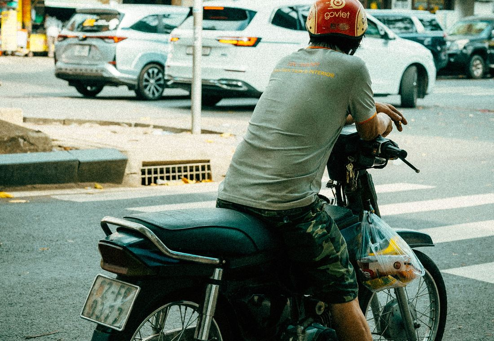
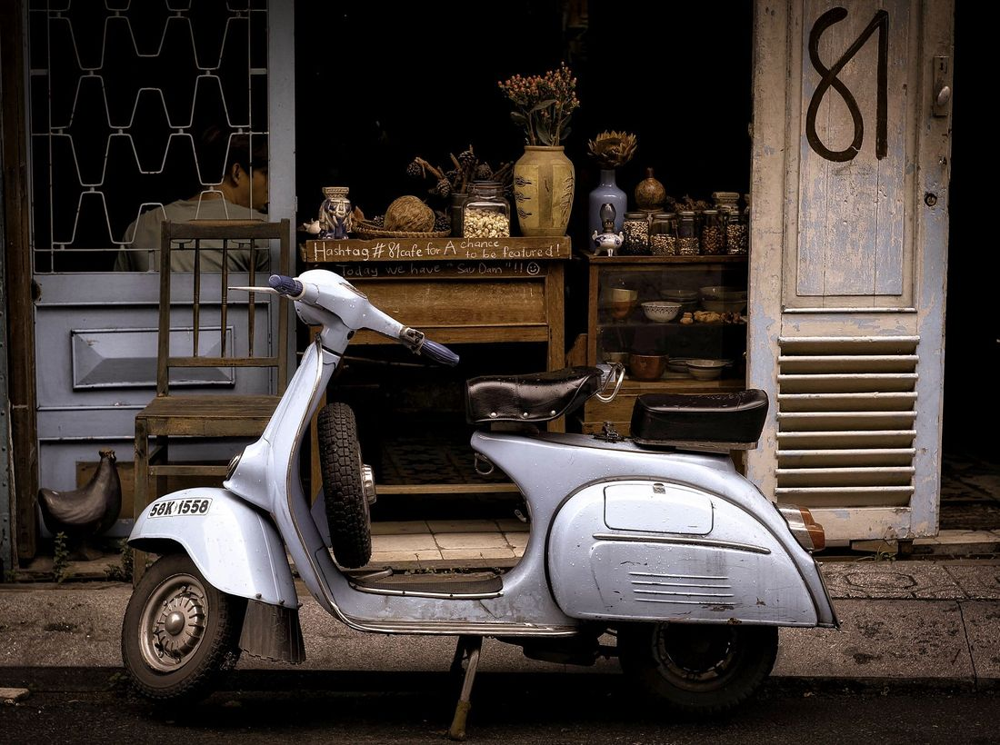

Едешь по Нячангу, впереди пост дорожной полиции (CSGT), машут жезлом остановиться. У туриста первая реакция — паника. Спокойно: если у тебя всё в порядке, ничего страшного не будет. Разберём по шагам, что делать, чтобы разъехаться спокойно.
На байк 50 кубов права не нужны — это законно, и полиция это знает. Останавливают для обычной проверки: шлем, документы на байк, трезвость. Если всё в порядке — тебя просто отпустят. Подробно про суммы — в статье штрафы 2026.


Чтобы проверка проходила за минуту: застёгнутый шлем, документы на байк (cà vẹt, оригинал или копия), паспорт/копия, и не садись за руль выпившим. Всё это — и полиция для тебя просто формальность.
Наши байки идут с чистыми документами, проверенными по базе полиции — значит на проверке не будет проблем «нет документов» или «не тот байк». И это реальные 50сс — законно без прав. Ты просто показываешь cà vẹt и едешь дальше.
Ещё полезное: нужны ли права на 50сс, где купить байк и где НЕ надо. Готов выбрать — каталог.